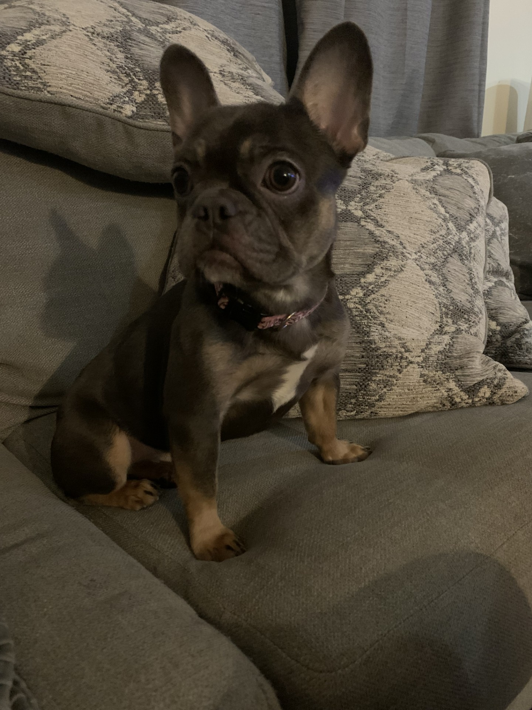
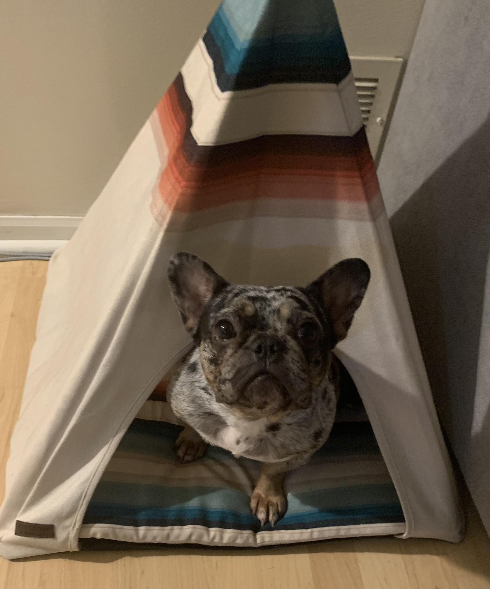
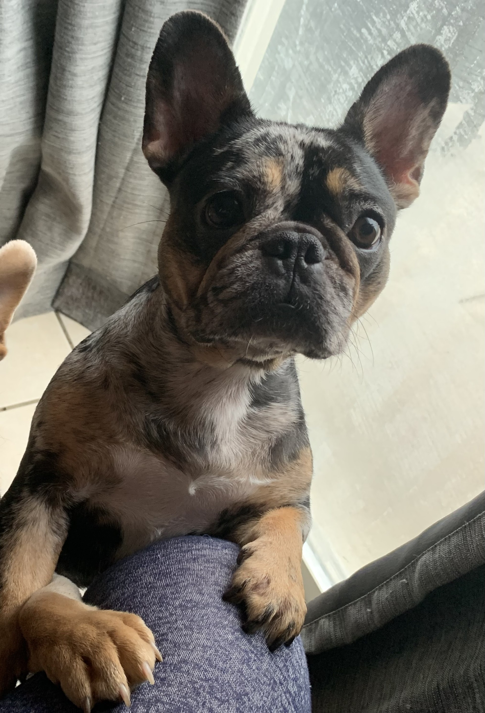

About French Bulldogs
French Bulldogs are small, muscular dogs with a smooth coat, compact build, and a distinctive bat-like ear shape. They are known for their playful and affectionate nature.
Care Tips
To keep your French Bulldog healthy:
- Provide a balanced diet suitable for small breeds.
- Ensure regular vet check-ups.
- Engage them in light exercise to prevent obesity.
Photo Gallery
Enjoy these adorable French Bulldogs!

